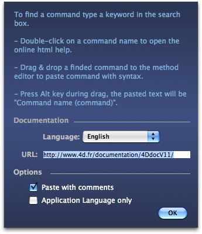

|
|
||||
|
|
||||
4DPop Commands allows you to quickly find the name of a command in French or English, to access the page of the online documentation or paste in the method editor the command with its syntax and a brief explanation of the values of the parameters expected.
| 1. | Create a folder "Components" near the structure file of the database (".4db") |
| 2. | Place the folder "4DPop Commands.4dbase"* or an alias of the folder into the folder "Components". If you use the component "4DPop", you can also drop the package/folder "4DPop Commands.4dbase" on the palette to automatically create the alias in the folder Components and restart your database. |
| 3. | Open database. |
| 4. | If you use the component "4DPop", the tool "4D Commands" displays in the palette, just click on it to display the tool window.
If the componant "4DPop" is not installed you must, to open the tool, select in the menu "Execute" the line "Method..." then select "Commands" then clic on the button "Execute" |
*On Macintosh, the component is a package with extension ".4dbase" who is not necessarily visible according to the adjustabilitys of your preferences.
Usage |
The tool provides a unique palette window of research inviting you to enter part of a command name, in real time, the list of commands found is updated, it lists the names of 4D command.
At this stage, two actions are possible:

If the Option / Alt key is pressed during drag & drop, the text pasted will be:Command name (# Command).
A click on the "i" button in the upper right of this window displays available settings:
The parameters are saved in the file "4dPop v11 preference.xml" in the 4D preference folder. |
 |
version 1.2 :
- Commands are now presented in both languages
This component is given in compiled version, but you will find the code source in the folder "SOURCES" inside the component folder.
A discussion list on 4DPop is available at this adress: Forum 4DPop